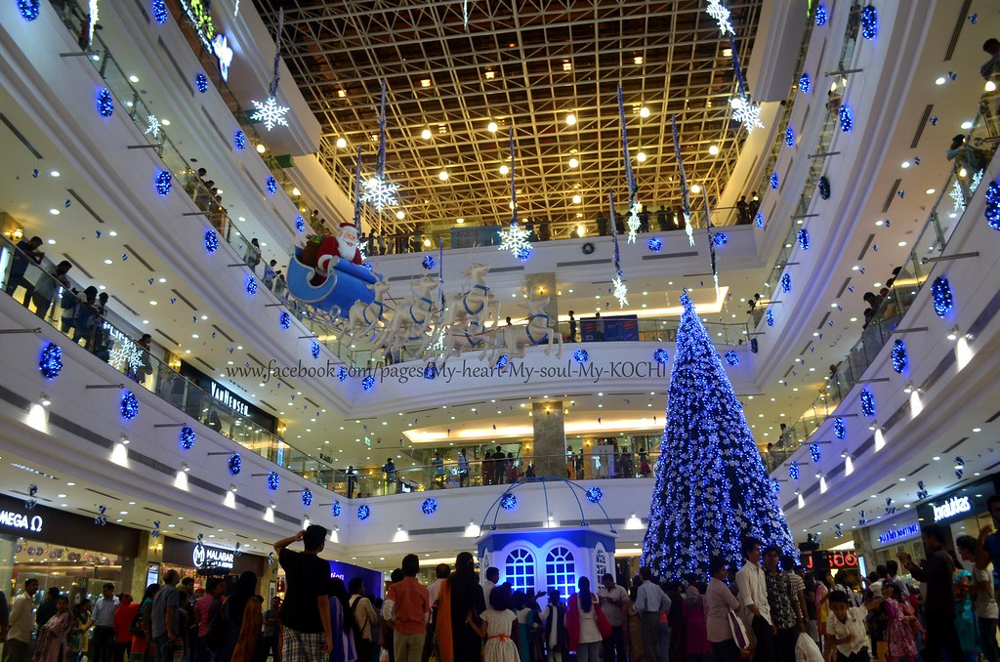
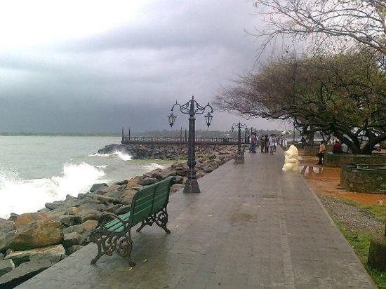

Lulu Mall

LuLu Mall, Kochi is a shopping mall located in Edappally, Kochi, Kerala. Spanning 17 acres, it is one of the largest malls in India with a total built up area of the project is 1,850,000 sq ft including convention center and hotel. The total area of mall is 731,950 sq ft.The estimated cost for this project was more than ₹2,000 crore. The property is owned and managed by Abu Dhabi based LuLu Group International.Jul 22, 2022 · The lulu mall biggest in asia lucknow news Mall has become a destination Mall for the people of Lucknow and neighboring areas. LuLu Group International.The name "LuLu Mall" in Lucknow, India is likely a reference to the mall's owner or developer, Lulu Group International. The country's largest shopping mall has opened in Lucknow and the name of this mall is Lulu Mall. This mall has been built at a cost of about 2000 crores. This mall is built on 11 acres of land.
Fort Kochi

A charming seaside area, Fort Kochi is known for its Dutch, Portuguese, and British colonial architecture, and elaborate bamboo fishing nets at Fort Kochi Beach. St. Francis Church was the original burial site of explorer Vasco da Gama. Upscale eateries and chic cafes serve Keralan specialties, and quaint shops sell cotton clothing and handmade souvenirs.Fort Kochi also has several attractions like the Santa Cruz Basilica. Fort Kochi also houses many historical monuments such as the St. Francis Church, the first church of Vasco da Gama, the Dutch Seminary, the China Vela and many others. The Indian Navy's ship, Dronacharya, is located in Fort Kochi.
Marian Drive
Marine Drive is a 3 kilometre-long Promenade along the Netaji Subhash Chandra Bose Road in Mumbai, India. The road and promenade were constructed by Pallonji Mistry. It is a banana-shaped, six-lane concrete road along the coast of a natural bay.